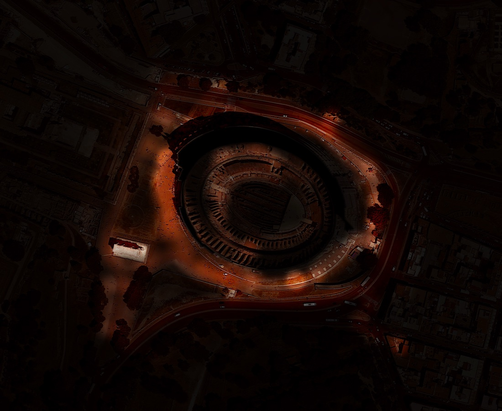

Colosseum Night Lighting Map
How evenly — or unevenly — is one of the world’s most visited monuments actually lit at night? Rather than relying on assumptions or existing lighting plans, SPIN Unit measured it directly, on foot, after dark.
Carried out in partnership with Sapienza University of Rome, with access to the Colosseum’s official architectural plans (all four orders plus the hypogeum) suggesting institutional/heritage-authority cooperation. Field data collection ran April–September 2015.
A wheeled cart carrying a lux meter, GPS, and a synchronized video telemetry overlay was walked around the Colosseum’s exterior and interior levels at night, logging light intensity and colour temperature continuously along multiple survey passes. The point data was merged in QGIS and smoothed via kernel density estimation (tested at eleven different bandwidths) into a continuous lighting-intensity surface, styled as a glowing heat-ring from 4 to 180 lux.
An iterative cartographic process — from raw point-blob drafts on daytime basemaps to a refined, styled night heat-map — culminating in a high-resolution composited aerial visual suitable for large-format print or exhibition.
{kind=link}

Open full size ↗